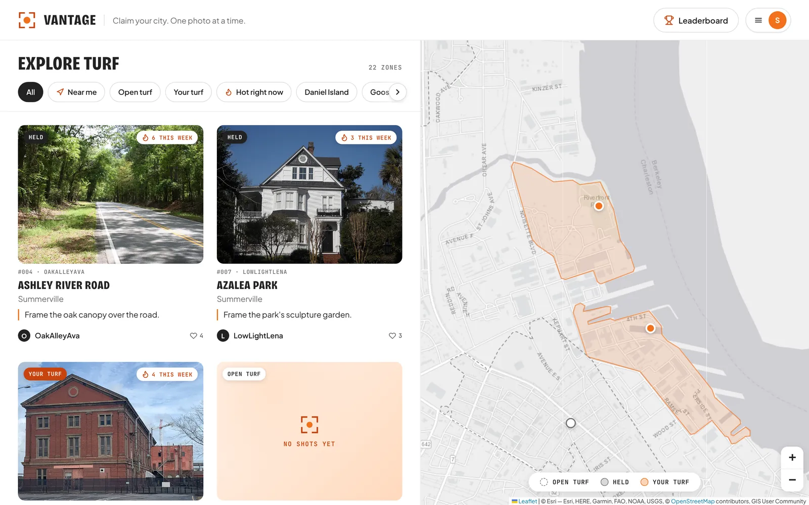

Vantage
Street photography as a turf war. Take the best photo at a real landmark and the spot is yours until someone shoots a better one.
- Real map borders cut from OpenStreetMap street data
- GPS check so a photo only counts if you're there
- Server-side rules so nobody can cheat the votes
- Node.js
- Express
- SQLite
- Leaflet
- OpenStreetMap